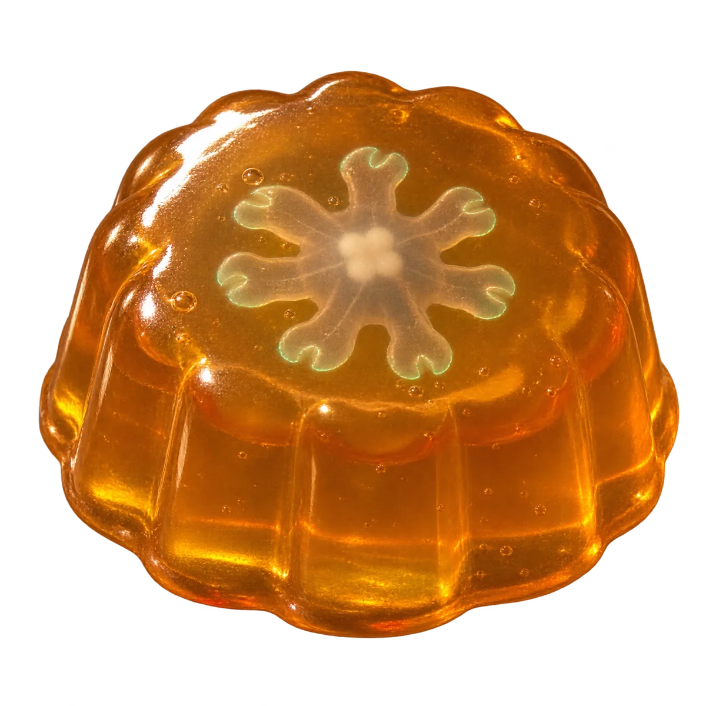

Software that sets itself.Read the designPre-alpha
An error lands in production.
It becomes a trail: evidence, repro, patch.
Proof, before anyone looks.
You approve where it matters.
It sets.
Or it slumps, and undoes itself.
Lands on Radicle, Tangled or plain git.
No pull requests. Runs on your box.
Jellyware: soft enough to change, firm enough to trust.Read the designNothing runs yet.